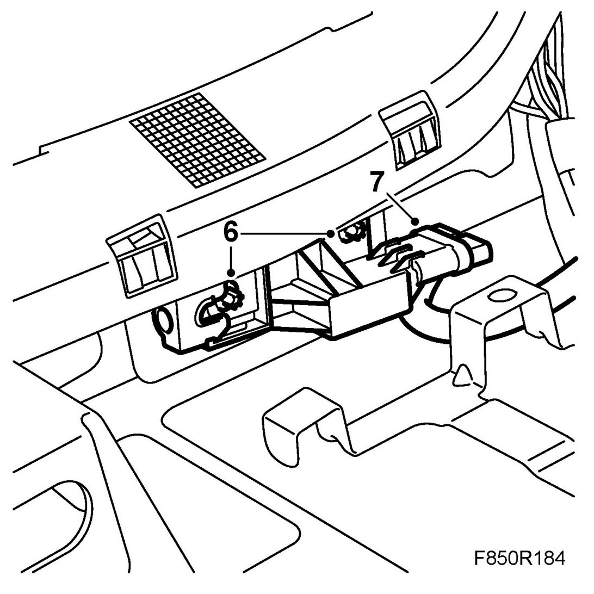
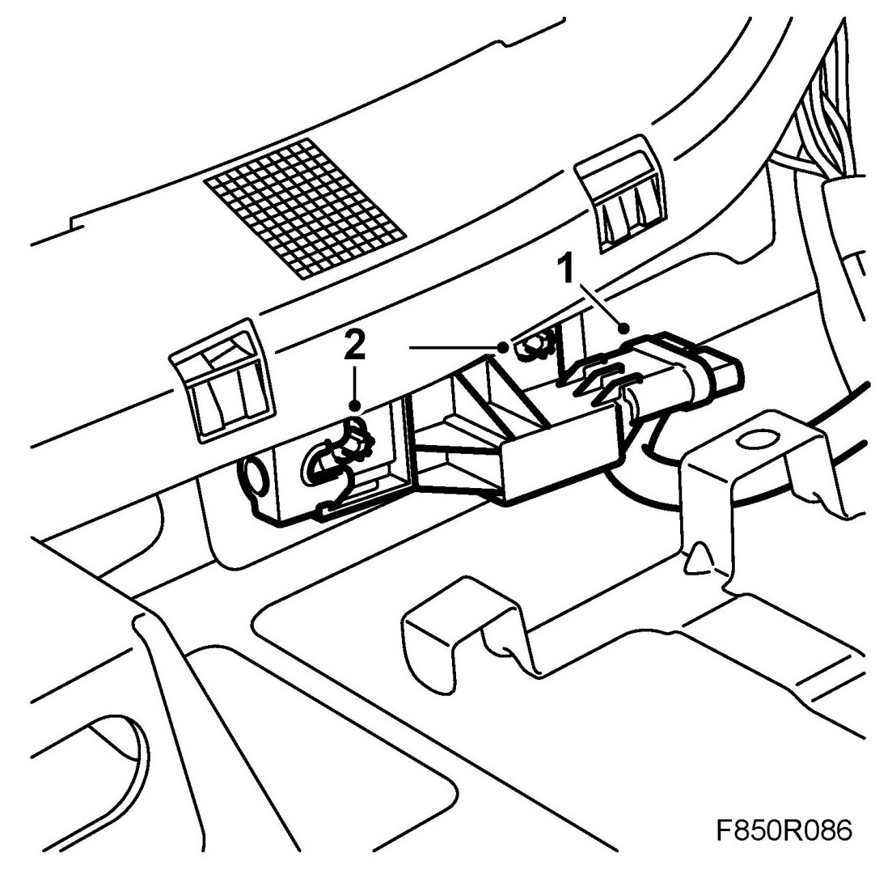

Impact Sensor, Side, Front (328D, 328P)
Impact Sensor, Side, Front (328D, 328P)
WARNING: Read through Safety and handling instructions and Before removing a control module before starting work.
To remove
WARNING: The battery's ground cable must be removed before the positive cable. Wait for at least 1 minute after disconnecting the battery before beginning any work on the airbag system. Otherwise the airbag may be deployed unintentionally and this can cause fatal/severe personal injuries.
1. Turn the ignition key to the position LOCK.
2. Remove the front seat.
3. Dismantle the front and rear scuff plates.
4. Remove the B-pillar trim.
5. Fold under the carpet.
6. Dismantle the side impact sensor by loosening the screws a few turns. Press together the locking clips on the rear part of the sensor. Press back the front part of the sensor and pull out the sensor.

7. Dismantle the side impact sensor's connector.
To fit
1. Connect the side impact sensor's connector.

2. Fit the side impact sensor by placing the sensor in its position. Pull forward the front part of the sensor. Tighten the screws.
Tightening torque 6 Nm (4 lbf ft)
3. Refit the carpet.
4. Fit the B-pillar trim.
5. Fit the front and rear scuff plates.
6. Fit the front seat.
7. Connect the battery.
8. Turn ON the ignition switch and check the airbag system and control module using the diagnostic tool as follows:
Connect the diagnostic tool to the data link connector under the dashboard. Delete any diagnostic trouble codes.
Turn the ignition OFF and then ON again. Wait at least 1 minute with the ignition on.
Check if any fault codes are displayed:
If a diagnostic trouble code is shown:
Carry out fault diagnosis according to the instructions under respective trouble codes.
If a diagnostic trouble code is not shown:
The assembly was successful. Disconnect the diagnostic tool.
9. Carry out Measures after disconnecting the battery.